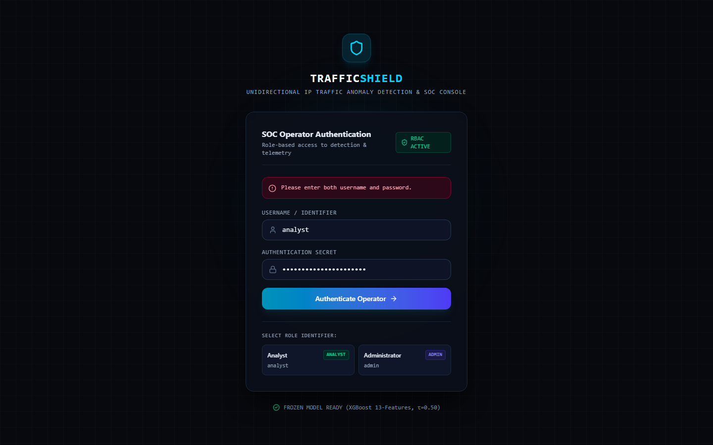
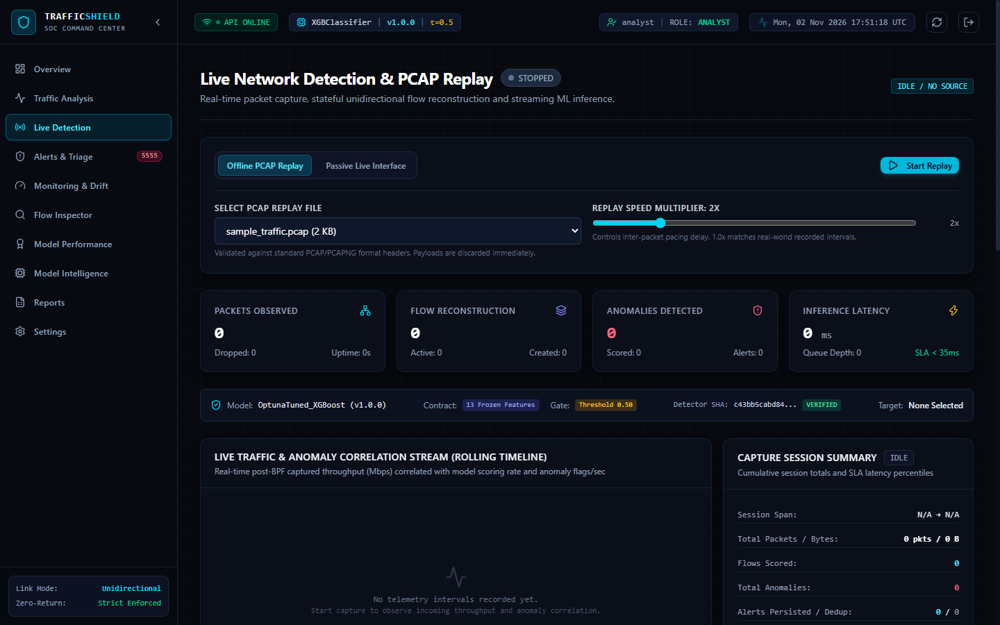
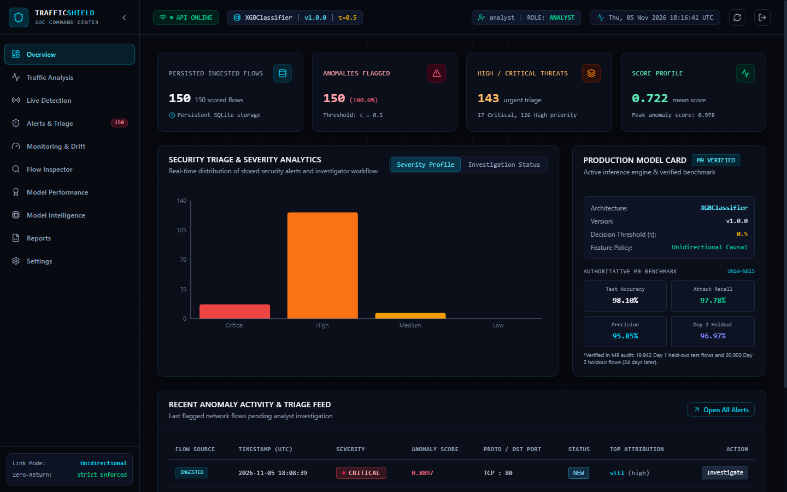
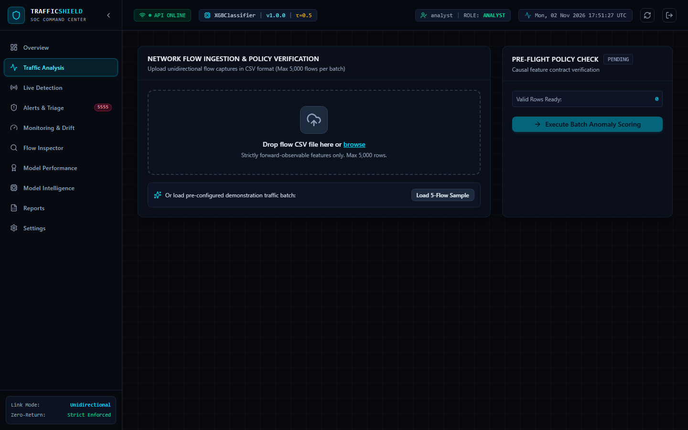
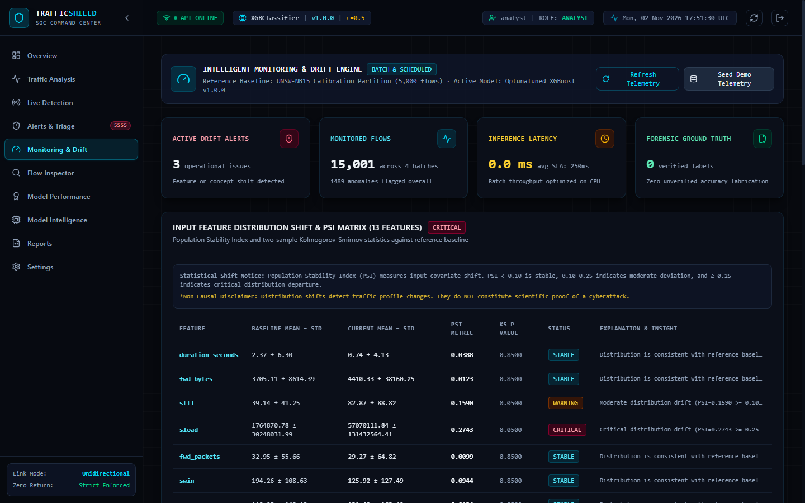

TrafficShield
Unidirectional IP Traffic Anomaly Detection for Critical Infrastructure
Protecting sub-stations, nuclear telemetry, and industrial control systems across hardware data diodes and optical taps using a dual-engine architecture: frozen supervised XGBoost and calibrated unsupervised Isolation Forest.
🛡️ Zero Reverse Context
Built strictly for unidirectional links where ACKs and reverse frames physically cannot exist.
⚡ Dual-Engine Precision
Couples frozen supervised classifier with independent unlabelled Isolation Forest.
🔒 Fail-Closed Security
Authoritative SHA-256 pre-deserialization integrity checks for all model artifacts.
The Critical Infrastructure Observability Barrier
Why traditional intrusion detection systems fail on unidirectional physical taps
⚡ Physical Isolation (Data Diodes)
Critical infrastructure networks isolate Operational Technology (OT) and SCADA systems using hardware optical taps or data diodes.
- Light physically transmits in one direction only.
- No reverse packets, no TCP handshake completion (SYN-ACK-ACK), no HTTP response payloads.
- Conventional IDSs (Snort, Suricata, Zeek) that rely on TCP state machines produce false alerts or crash.
🚫 The Threat Profile Dilemma
Why signature-only and purely unsupervised systems both fail when used in isolation:
- Labelled Attack Data Scarcity: True attack samples on live critical infrastructure are virtually non-existent.
- Signature Drift: Supervised models fail against zero-day exploits and novel volumetric variations.
- Unsupervised Noise: Pure anomaly detectors trigger excessive false positives on benign bursty background traffic.
💡 The TrafficShield Solution
A dual-model hybrid architecture that delivers high-confidence signature detection via frozen supervised XGBoost alongside novelty zero-day discovery via calibrated unsupervised Isolation Forest.
Strict 13-Feature Unidirectional Engineering
Total elimination of reverse-direction metrics and future-window lookahead
| # | Feature Name | Type | Causal Definition |
|---|---|---|---|
| 1 | duration_seconds | Float | Flow duration ($L_{\text{time}} - S_{\text{time}}$) |
| 2 | fwd_bytes | Integer | Total bytes in forward direction |
| 3 | sttl | Integer | Source IP Time-To-Live header |
| 4 | sload | Float | Source bits per second |
| 5 | fwd_packets | Integer | Total forward packet count |
| 6 | swin | Integer | Source TCP window advertisement |
| 7 | smeansz | Float | Mean forward packet size |
| # | Feature Name | Type | Causal Definition |
|---|---|---|---|
| 8 | sjit | Float | Inter-arrival jitter (RFC 3550 EMA) |
| 9 | sintpkt | Float | Mean inter-packet arrival time |
| 10 | is_sm_ips_ports | Boolean | Source/destination match flag |
| 11 | packet_rate | Float | Causal forward packets / sec |
| 12 | byte_rate | Float | Causal forward bytes / sec |
| 13 | bytes_per_packet | Float | Mean bytes / forward packet |
🚫 Strict Negative Enforcement
Reverse fields (dbytes, dload, dttl, ackdat) are rejected immediately at both the frontend validator and REST API gateway.
Hybrid ML Architecture & Artifact Integrity
Decoupled dual detectors with fail-closed cryptographic verification
1. Supervised XGBoost Detector
- Artifact:
production_detector.joblib(246,095 bytes) - Calibration Threshold: $\tau = 0.500000$
- Role: Captures known attack signatures (DDoS, Exploits, Fuzzers, Port Scans).
- Status: FROZEN byte-for-byte across all release milestones.
2. Independent Isolation Forest
- Artifact:
production_iforest.joblib(733,311 bytes) - Calibration Threshold: $\tau = 0.727896$ (95th empirical percentile on benign flows)
- Role: Novelty detector for zero-days and structural traffic deviations.
- Status: Trained on $N=100,000$ unlabelled benign calibration flows.
🔒 Pre-Deserialization Cryptographic Verification
Before any joblib/pickle object is loaded into memory, ProductionInferenceService validates its exact SHA-256 digest against an immutable cryptographic manifest. Any tampering immediately halts initialization with a fatal security exception.
The 4-Tier Hybrid Decision Matrix
Transparent, explainable classifications eliminating black-box ambiguity
| Hybrid Classification | Supervised ($P \ge 0.50$) | Unsupervised ($S \ge 0.728$) | Severity | SOC Operational Action |
|---|---|---|---|---|
| DUAL_CONFIRMED | YES | YES | CRITICAL | Highest Priority: Both algorithms agree on threat. 100.0% precision on benchmark. Immediate automated containment & incident triage. |
| SUPERVISED_ONLY_ALERT | YES | NO | HIGH | Known Signature: Matches attack signature, but structural profile mimics normal baseline (e.g. low-volume exploit or TTL shift). |
| UNSUPERVISED_NOVELTY | NO | YES | MEDIUM | Zero-Day Anomaly: Structural outlier with no matching supervised signature. Flagged for threat hunting and forensic capture. |
| NORMAL_TRAFFIC | NO | NO | INFO | Benign Baseline: Conforms to normal baseline. Passed through without alert overhead. |
Empirical Benchmark Evaluation (UNSW-NB15)
Evaluated on independent unlabelled test partition ($N = 19,951$ flows, 2,213 attacks)
Supervised XGBoost
Accuracy: 94.75%
Precision: 72.82%
Recall: 85.58%
F1-Score: 78.68%
ROC-AUC: 0.9634
Unsupervised IForest
Accuracy: 90.62%
Precision: 56.41%
Recall: 82.20%
F1-Score: 66.90%
ROC-AUC: 0.9255
Hybrid Synergy
Dual Precision: 100.0%
Novel Discovery: Captured zero-day anomalies missed by supervised models.
Batch Throughput: > 12,000 flows/sec

Live Passive Capture & Operational Findings
Passive observation on authorized Wi-Fi interface (572 packets, 331 flows)
📡 Real-World Capture Metrics (M15.2)
- Interface Monitored:
Wi-Fi(`10.36.107.148`) - Packets Captured: 572 frames (123,321 bytes) via Npcap.
- Flows Reconstructed: 331 unidirectional flows.
- Inference Processing: 100% of flows evaluated without drops.
- Classification Breakdown: 131
SUPERVISED_ONLY_ALERT, 200NORMAL_TRAFFIC.
🔬 Root Cause Analysis: TTL Shift
- Observation: Local Windows subnet broadcasts (mDNS port 5353, SSDP, LLMNR) emit frames with $TTL = 255$.
- Model Response: The frozen XGBoost model has training priors where $TTL=255$ correlated with attacks, while Isolation Forest scored them as structurally normal ($S \approx 0.55 < 0.728$).
- Hybrid Protection: Categorized safely as
SUPERVISED_ONLY_ALERTrather than escalating toDUAL_CONFIRMED.

Enterprise Dark SOC Command Center
Tactical obsidian interface designed for zero-latency threat triage




Security Architecture & Anti-Tamper Hardening
Comprehensive 13-dimension defense-in-depth verification
🔑 Cryptographic Integrity
Pre-deserialization SHA-256 checks. Models fail closed if file altered by even a single byte.
🛡️ Zero Payload Logging
Network drivers immediately discard raw packet payloads. Only 13 forward numerical features are retained.
👤 Role-Based Access
JWT tokens with Argon2/scrypt password hashing. Server-enforced analyst vs admin role boundaries.
💉 Injection Immunity
100% parameterized SQLAlchemy ORM queries. Formula injection defenses for CSV spreadsheet exports.
⏱️ Resource Bounding
Fixed-size bounded queues (10,000 active flows, 200 alert ring-buffer) protect against DoS memory spikes.
🌐 Strict CORS & CSP
Explicit origin whitelisting (never *) and hardened Content Security Policy headers.
Operational Recommendations & Readiness Verdict
Actionable guidance for SOC deployments and final qualification sign-off
System Readiness Verdict: PASS WITH LIMITATIONS
TrafficShield passes all system regression tests (156 Python + 43 Vitest) with flawless code quality and robust security controls. The "Limitations" qualification accurately reflects real-world domain shift on local broadcast traffic ($TTL=255$) and the inherent absence of attack ground truth in live passive monitoring.
📋 Operational SOC Runbook
- Prioritize
DUAL_CONFIRMEDAlerts: Treat dual detections as confirmed security incidents requiring immediate action. - Contextualize
SUPERVISED_ONLY: Verify whether destination is multicast (224.0.0.251) or broadcast with $TTL=255$. - Threat-Hunt
UNSUPERVISED_NOVELTY: Route novel anomalies to Tier-3 analysts for deep PCAP inspection.
🚀 Future Roadmap
- Self-supervised contrastive learning on benign unidirectional baseline flows.
- Kernel-level eBPF / DPDK acceleration for 10Gbps+ optical data diodes.
- Automated BPF policy generation for known local multicast services.